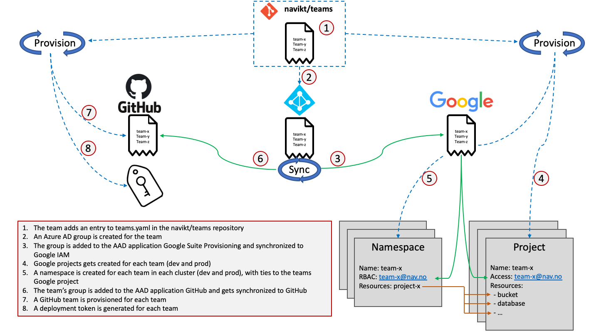

Teams§
Access to a resource in NAIS is based on a label set on the resource called team.
In the context of Azure Active Directory a group is the same as a team, and you may already be part of a team that has applications on NAIS.
Every group in AAD has a so-called mailnick/tag, this is what NAIS generally uses to identify teams.
When viewing a group, the mailnick is the value before the @ in the email field.
Creating a new team§
- To create a new team, make a pull request to the teams repository on Github
- The group's owners can manage the group using either outlook or AAD
- The following resources will be generated for the new team:

- An Azure AD group is created, and can be viewed in the My Groups portal
- A GitHub team is created.
- Deploy keys are created, and can be obtained in the NAIS deploy frontend.
- GCP users are provisioned, and users can log in to the Google Cloud Console using their NAV e-mail address.
- Two GCP projects are provisioned, one for development and one for production. See
https://console.cloud.google.com/home/dashboard?project=<(dev|prod)-yourteamname>. - Namespaces are provisioned in all Kubernetes clusters.
Managing your team§
- Team members are managed by managing the group in My Groups portal
Warning
It is the responsibility of each team to keep the group member roster up to date. This includes removing former team members in a timely fashion.
Access to API keys§
In order to access team API keys, go to deploy.nais.io. Here you will find API keys for all teams you are a member of.
Rotate API key§
Go to deploy.nais.io and click on the "Rotate key" button, a pop-up will ask you to confirm the rotation.
Team namespaces§
Team namespaces are supported in both on-prem and in GCP. Refer to the team namespaces documentation for details.
GCP Team projects§
Each team has their own Google Cloud Platform project, which consist of:
- a set of users,
- a set of APIs,
- in addition to authentication and monitoring settings of those APIs.
So, for example, all of your Cloud Storage buckets and objects, along with user permissions for accessing them, reside in a project.
In general every member of the team has the possibility to add the necessary permissions they need via IAM role managment. There is no general limitation as to which features/products that can be used in a project, but everything needs to have been ROS'd. While we encourage the teams to base their ROS(s) and PVK(s) on the ones done by the NAIS team, each team is responsible to do their own necessary ROS and PVK aimed for their usage/feature not covered by existing ROS.
Remember to clean up after yourself, so that NAV doesn't unnecessarily pay for resources. We have a dashboard showing what each team is using, plus a dashboard for everything in GCP.
Nais recommends that teams use Terraform, og similar technologies, to control the lifecycle of resources created in team-projects. This is more important in production, for services that will run for a longer period of time, than ad-hoc experimentation in dev.
Access management§
To promote autonomous teams, teams control access to their own projects completely by themselves. This can be done either by pipeline, or manually adding access when needed.
There are different scenarios for when and how to give access to users, and the official Google Cloud Docs is definitively the best source for information.
Google Docs has a list of possible predefined roles that we recommend using.
These roles can also be listed our with gcloud iam roles list --filter $resource.
Running the command without the --filter argument will return a very long list.
Temporary access§
On a general basis, access should not be permanent. A good habit is to only grant your self or other a temporary access.
Using the following gcloud-cli command will grant a user 1 hours of access to roles/cloudsql.instanceUser:
gcloud projects add-iam-policy-binding <PROJECT_ID> --member=user:<FIRSTNAME>.<LASTNAME>@nav.no --role=roles/cloudsql.instanceUser --condition="expression=request.time < timestamp('$(date -v '+1H' -u +'%Y-%m-%dT%H:%M:%SZ')'),title=temp_access"
There is more information over at Google Cloud Docs.
Examples§
Access to Postgres
We have a separate guide for how to give your self temporary access to a Postgres database. Head on over to persistence/postgres.
Underneath we have outlined two typical use cases for when you need to give your self or someone else access.
Do get a better understanding of how to give and revoke access with gcloud, you should read Granting, changing, and revoking access to resources
.
How to give your self access§
To be able to run this commando, you first need to find your PROJECT_ID, and the specific ROLE_NAME you want access to. To adhere to the principle of using temporary access, the example below will give access to ROLE_NAME for 1 hour.
gcloud projects add-iam-policy-binding <PROJECT_ID> --member=user:<FIRSTNAME>.<LASTNAME>@nav.no --role=<ROLE_NAME> --condition="expression=request.time < timestamp('$(date -v '+1H' -u +'%Y-%m-%dT%H:%M:%SZ')'),title=temp_access"
As an example, if you'd want to view your team's Storage buckets, you'll need the roles/storage.objectViewer role.
It's always smart to only give out temporary access.
This can also be leveraged to give a user belonging to a different team access to your team's resources.
How to give a service account access§
A service account is also a --member of a project, but instead of running the command mentioned in How to give your self access, you change --member=user:<email> to --member=serviceAccount:<email>.
GCP IAM recommender§
Sometimes you might end up giving more (a wider) access than strictly necessary - but fear not! GCP has an IAM recommender which will monitor each access permission given, and compare it to accesses actually asked for (or required). After which the IAM recommender will recommend a more granular access, that probably fits you and your usage better! Read more about the IAM recommender over at Google Cloud Docs.